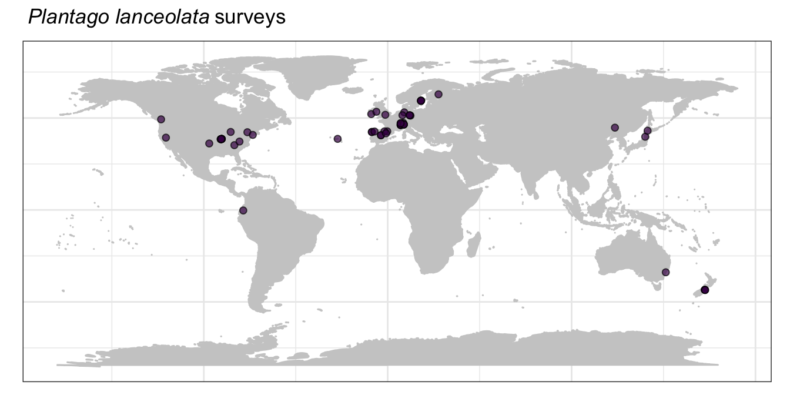

Sampling status
The Herbivory Variability Network has completed 768 surveys on 492 plant species from 136 plant families, which is about 29% of all extant vascular plant families. These figures and tables update as new data are entered into our database, so check back often!
Our Phase 1 of data collection had a three-scaled sampling approach:
- Sampling one plant species from as many plant families as possible
- Sampling as many species (and tribes and genera) as possible from five focal families (Apocynaceae, Asteraceae, Fabaceae, Rubiaceae, and Solanaceae)
- Sampling as many sites as possible for three focal species (Taraxacum officinale, Plantago lanceolata, and Plantago major).
The goal of this stratified sampling plan was to avoid potential biases in geographic and/or taxonomic coverage, as well as to permit robust exploration of factors that shape patterns in herbivory.
Below we show the current status of our sampling for each of the three scales of sampling, our overall geographic extent, and finally our current plant species list.
Sampling across plant families
 with mega-tree from Jin et al. 2019.](status_files/figure-html/unnamed-chunk-1-1.png)
The distribution of currently sampled plant families (purple) across the phylogeny of all extant vascular plant families. Figure made by HerbVar collaborator Marjorie Weber with mega-tree from Jin et al. 2019.
The geographic distribution of our completed surveys. Each hexagon shows the number of herbivory surveys that we have completed in that area.
Sampling within plant families

Number of completed surveys per plant family. Our five focal families are in yellow (Apocynaceae, Asteraceae, Fabaceae, Rubiaceae, and Solanaceae).
Sampling within focal species
We have three focal species that we are aiming to sampling across the broadest possible geographic extent and across broad environmental gradients. These are Taraxacum officinale, Plantago major, and Plantago lanceolata. This is the newest part of our sampling effort and a major component of our Phase 2 of data collection, so we are just starting to collect these data.



Species list
Our current species list with the number of surveys completed for each species.
| Plant family | Plant species | No. surveys |
|---|---|---|
| Acanthaceae | Ruellia nudiflora | 3 |
| Acanthaceae | Ruellia tuberosa | 1 |
| Aceraceae | Acer rubrum | 1 |
| Adoxaceae | Viburnum lantana | 1 |
| Alismataceae | Sagittaria cuneata | 1 |
| Alstroemeriaceae | Alstroemeria aurea | 1 |
| Alstroemeriaceae | Alstroemeria pulchra | 1 |
| Alstroemeriaceae | Bomarea chiriquina | 1 |
| Altingiaceae | Liquidambar styraciflua | 2 |
| Amaranthaceae | Achyranthes aspera | 1 |
| Amaranthaceae | Alternanthera brasiliana | 2 |
| Amaranthaceae | Alternanthera ficoidea | 1 |
| Amaranthaceae | Alternanthera sessilis | 1 |
| Amaranthaceae | Amaranthus sp | 1 |
| Amaranthaceae | Chenopodium album | 2 |
| Amaryllidaceae | Crinum asiaticum | 1 |
| Amaryllidaceae | Zephyranthes cisandina | 1 |
| Anacardiaceae | Rhus copallinum | 1 |
| Anacardiaceae | Schinus patagonicus | 1 |
| Annonaceae | Polyalthia longifolia | 1 |
| Apiaceae | Heracleum maximum | 1 |
| Apiaceae | Myrrhidendron donnell-smithii | 1 |
| Apiaceae | Pastinaca sativa | 1 |
| Apiaceae | Sanicula liberta | 1 |
| Apiaceae | Zizia aurea | 5 |
| Apocynaceae | Apocynum cannabinum | 2 |
| Apocynaceae | Asclepias cryptoceras | 1 |
| Apocynaceae | Asclepias curassavica | 1 |
| Apocynaceae | Asclepias incarnata | 1 |
| Apocynaceae | Asclepias speciosa | 1 |
| Apocynaceae | Asclepias syriaca | 4 |
| Apocynaceae | Asclepias tuberosa | 1 |
| Apocynaceae | Calotropis procera | 2 |
| Apocynaceae | Gomphocarpus fructicosus | 1 |
| Apocynaceae | Landolphia dulcis | 1 |
| Apocynaceae | Vincetoxicum hirundinaria | 1 |
| Aquifoliaceae | Ilex aquifolium | 1 |
| Araceae | Amorphophallus commutatus | 1 |
| Araceae | Arisaema triphyllum | 1 |
| Araliaceae | Aralia nudicaulis | 2 |
| Araliaceae | Hydrocotyle maritima | 1 |
| Araliaceae | Oreopanax palamophyllus | 1 |
| Araliaceae | Panax trifolius | 2 |
| Arecaceae | Chamaedorea woodsoniana | 1 |
| Arecaceae | Roystonea regia | 1 |
| Aristolochiaceae | Aristolochia chilensis | 1 |
| Aristolochiaceae | Asarum canadense | 1 |
| Asparagaceae | Cordyline australis | 1 |
| Asparagaceae | Hesperoyucca whipplei | 1 |
| Asparagaceae | Maianthemum canadense | 3 |
| Asparagaceae | Maianthemum paniculatum | 1 |
| Asparagaceae | Polygonatum biflorum | 1 |
| Asphodelaceae | Pasithea caerulea | 2 |
| Asphodelaceae | Phormium tenax | 1 |
| Aspleniaceae | Asplenium claussenii | 1 |
| Aspleniaceae | Asplenium platyneuron | 1 |
| Asteraceae | Achillea ptarmica | 1 |
| Asteraceae | Ageratina altissima | 3 |
| Asteraceae | Ageratina havanensis | 1 |
| Asteraceae | Ageratum conyzoides | 1 |
| Asteraceae | Ageratum fastigiatum | 1 |
| Asteraceae | Antennaria neglecta | 1 |
| Asteraceae | Anthemis galilae | 1 |
| Asteraceae | Arctium minus | 2 |
| Asteraceae | Artemisia ludoviciana | 1 |
| Asteraceae | Artemisia mongolica | 1 |
| Asteraceae | Baccharis dracunculifolia | 1 |
| Asteraceae | Baccharis serrulata | 1 |
| Asteraceae | Balsamorhiza sagittata | 3 |
| Asteraceae | Bidens frondosa | 1 |
| Asteraceae | Bidens reptans | 1 |
| Asteraceae | Celmisia discolor | 1 |
| Asteraceae | Celmisia spectabilis | 1 |
| Asteraceae | Centaurea stoebe | 2 |
| Asteraceae | Chromolaena odorata | 2 |
| Asteraceae | Cirsium arvense | 1 |
| Asteraceae | Conoclinium coelestinum | 1 |
| Asteraceae | Echinacea purpurea | 6 |
| Asteraceae | Emilia praetermissa | 1 |
| Asteraceae | Encelia canescens | 1 |
| Asteraceae | Erigeron glacialis | 2 |
| Asteraceae | Erigeron strigosus | 1 |
| Asteraceae | Eurybia macrophylla | 1 |
| Asteraceae | Flourensia thurifera | 1 |
| Asteraceae | Grindelia squarrosa | 3 |
| Asteraceae | Helianthella quinquenervis | 3 |
| Asteraceae | Helianthus annuus | 2 |
| Asteraceae | Helianthus occidentalis | 1 |
| Asteraceae | Heterotheca subaxillaris | 1 |
| Asteraceae | Hieracium pilosella | 3 |
| Asteraceae | Hypochaeris chillensis | 1 |
| Asteraceae | Hypochaeris radicata | 2 |
| Asteraceae | Ixeridium dentatum | 1 |
| Asteraceae | Jacobaea vulgaris | 1 |
| Asteraceae | Jessea multivenia | 1 |
| Asteraceae | Jungia ferruginea | 1 |
| Asteraceae | Kalimeris integrifolia | 1 |
| Asteraceae | Lactuca sibirica | 1 |
| Asteraceae | Leucanthemum vulgare | 1 |
| Asteraceae | Maianthemum racemosum | 1 |
| Asteraceae | Melanthera scandens | 1 |
| Asteraceae | Munnozia pinnatipartita | 1 |
| Asteraceae | Nabalus altissimus | 1 |
| Asteraceae | Olearia paniculata | 1 |
| Asteraceae | Proustia cuneifolia | 1 |
| Asteraceae | Pulicaria dysenterica | 1 |
| Asteraceae | Raoulia eximia | 1 |
| Asteraceae | Ratibida pinnata | 1 |
| Asteraceae | Rudbeckia hirta | 3 |
| Asteraceae | Rudbeckia laciniata | 1 |
| Asteraceae | Rudbeckia triloba | 1 |
| Asteraceae | Senecio brunonianus | 1 |
| Asteraceae | Senecio crassulus | 1 |
| Asteraceae | Senecio elegans | 1 |
| Asteraceae | Senecio madagascariensis | 1 |
| Asteraceae | Solidago altissima | 6 |
| Asteraceae | Solidago caesia | 1 |
| Asteraceae | Solidago canadensis.altissima | 1 |
| Asteraceae | Solidago canadensis | 1 |
| Asteraceae | Solidago missouriensis | 1 |
| Asteraceae | Solidago simplex | 1 |
| Asteraceae | Solidago speciosa | 1 |
| Asteraceae | Solidago virgaurea | 1 |
| Asteraceae | Symphyotrichum cordifolium | 1 |
| Asteraceae | Symphyotrichum novae-angliae | 1 |
| Asteraceae | Symphyotrichum novi-belgii | 1 |
| Asteraceae | Taraxacum mongolicum | 1 |
| Asteraceae | Taraxacum officinale | 37 |
| Asteraceae | Tragopogon dubius | 1 |
| Asteraceae | Tussilago farfara | 1 |
| Asteraceae | Verbesina encelioides | 1 |
| Asteraceae | Vernonia baldwinii | 1 |
| Asteraceae | Vernonia gigantea | 1 |
| Asteraceae | Wyethia mollis | 2 |
| Athyriaceae | Diplazium cristatum | 1 |
| Balsaminaceae | Impatiens capensis | 3 |
| Balsaminaceae | Impatiens parviflora | 2 |
| Berberidaceae | Berberis microphylla | 1 |
| Berberidaceae | Nandina domestica | 1 |
| Berberidaceae | Podophyllum peltatum | 2 |
| Betulaceae | Alnus acuminata | 1 |
| Betulaceae | Alnus hirsuta | 1 |
| Betulaceae | Betula alleghaniensis | 1 |
| Betulaceae | Betula pubescens | 1 |
| Betulaceae | Carpinus caroliniana | 1 |
| Betulaceae | Corylus avellana | 1 |
| Bignoniaceae | Catalpa speciosa | 4 |
| Bignoniaceae | Handroanthus ochraceus | 1 |
| Blechnaceae | Blechnum occidentale | 1 |
| Blechnaceae | Lomaridium plumieri | 1 |
| Blechnaceae | Neoblechnum brasiliense | 1 |
| Boraginaceae | Amsinckia menziesii | 1 |
| Boraginaceae | Cryptantha cinerea | 1 |
| Boraginaceae | Eriodictyon californicum | 1 |
| Boraginaceae | Heliotropium indicum | 1 |
| Boraginaceae | Pentaglottis sempervirens | 1 |
| Brassicaceae | Alliaria petiolata | 1 |
| Brassicaceae | Arabidopsis halleri | 4 |
| Brassicaceae | Barbarea vulgaris | 1 |
| Brassicaceae | Brassica oleracea | 1 |
| Brassicaceae | Diplotaxis erucoides | 1 |
| Brassicaceae | Draba asterophora | 1 |
| Brassicaceae | Lepidium draba | 8 |
| Brassicaceae | Raphanus raphanistrum | 1 |
| Bromeliaceae | Vriesea platynema | 1 |
| Buxaceae | Buxus sempervirens | 1 |
| Cabombaceae | Brasenia schreberi | 1 |
| Cactaceae | Opuntia cespitosa | 1 |
| Cactaceae | Opuntia engelmanii | 1 |
| Cactaceae | Tacinga palmadora | 1 |
| Calophyllaceae | Kielmeyera petiolaris | 1 |
| Campanulaceae | Campanula persicifolia | 1 |
| Campanulaceae | Campanula rotundifolia | 1 |
| Campanulaceae | Lobelia polyphylla | 1 |
| Cannaceae | Canna indica | 1 |
| Capparaceae | Capparis erythrocarpos | 1 |
| Caprifoliaceae | Lomelosia prolifera | 1 |
| Caprifoliaceae | Symphoricarpos albus | 1 |
| Caprifoliaceae | Valeriana carnosa | 1 |
| Caryophyllaceae | Stellaria roughii | 1 |
| Celastraceae | Maytenus boaria | 1 |
| Cistaceae | Cistus monspeliensis | 1 |
| Cistaceae | Cistus salviifolius | 1 |
| Combretaceae | Combretum hispidium | 1 |
| Commelinaceae | Tradescantia fluminensis | 1 |
| Commelinaceae | Tradescantia ohiensis | 2 |
| Commelinaceae | Tradescantia zanonia | 1 |
| Convolvulaceae | Ipomoea batatas | 1 |
| Convolvulaceae | Ipomoea nil | 1 |
| Cornaceae | Cornus disciflora | 1 |
| Cornaceae | Cornus florida | 1 |
| Cornaceae | Cornus suecica | 1 |
| Crassulaceae | Dudleya farinosa | 1 |
| Cucurbitaceae | Cucurbita foetidissima | 1 |
| Cyatheaceae | Alsophila setosa | 1 |
| Cyperaceae | Carex leucochlora | 1 |
| Cyperaceae | Cyperus esculentus | 1 |
| Dioscoreaceae | Dioscorea racemosa | 1 |
| Dipterocarpaceae | Shorea robusta | 1 |
| Doryanthaceae | Doryanthes excelsa | 1 |
| Droseraceae | Drosera capillaris | 1 |
| Droseraceae | Drosera rotundifolia | 1 |
| Dryopteridaceae | Ctenitis submarginalis | 1 |
| Ebenaceae | Diospyros texana | 1 |
| Elaeocarpaceae | Aristotelia chilensis | 1 |
| Ericaceae | Arctostaphylos pungens | 1 |
| Ericaceae | Chimaphila umbellata | 1 |
| Ericaceae | Erica multiflora | 1 |
| Euphorbiaceae | Croton capitatus | 2 |
| Euphorbiaceae | Euphorbia corollata | 1 |
| Euphorbiaceae | Euphorbia esula | 1 |
| Euphorbiaceae | Microstachys serrulata | 1 |
| Euphorbiaceae | Ricinus communis | 1 |
| Fabaceae | Acacia dealbata | 1 |
| Fabaceae | Acacia implexa | 1 |
| Fabaceae | Acacia longifolia | 1 |
| Fabaceae | Acacia suaveolens | 1 |
| Fabaceae | Acmispon wrangelianus | 1 |
| Fabaceae | Adesmia boronioides | 1 |
| Fabaceae | Aotus genistoides | 1 |
| Fabaceae | Astragalus alpinus | 2 |
| Fabaceae | Bauhinia racemosa | 1 |
| Fabaceae | Cercis canadensis | 1 |
| Fabaceae | Chamaecrista fasciculata | 1 |
| Fabaceae | Crotalaria juncea | 1 |
| Fabaceae | Crotalaria pallida | 1 |
| Fabaceae | Crotalaria vitellina | 1 |
| Fabaceae | Dalbergia miscolobium | 1 |
| Fabaceae | Desmodium gangeticum | 1 |
| Fabaceae | Desmodium glutinosum | 1 |
| Fabaceae | Desmodium incanum | 1 |
| Fabaceae | Desmodium podocarpum | 1 |
| Fabaceae | Desmodium procumbens | 1 |
| Fabaceae | Glycine max | 1 |
| Fabaceae | Indigofera hirsuta | 1 |
| Fabaceae | Lathyrus quinquenervius | 1 |
| Fabaceae | Latrobea pinnaculum | 1 |
| Fabaceae | Lespedeza pilosa | 1 |
| Fabaceae | Lupinus arboreus | 1 |
| Fabaceae | Lupinus argenteus | 1 |
| Fabaceae | Lupinus perennis | 5 |
| Fabaceae | Lupinus pilosus | 1 |
| Fabaceae | Lupinus polyphyllus | 1 |
| Fabaceae | Lupinus sericeus | 1 |
| Fabaceae | Medicago polymorpha | 1 |
| Fabaceae | Melilotus albus | 1 |
| Fabaceae | Mimosa albida | 1 |
| Fabaceae | Mimosa tenuiflora | 1 |
| Fabaceae | Montigena novae-zelandiae | 1 |
| Fabaceae | Pediomelum tenuiflorum | 1 |
| Fabaceae | Phaseolus lunatus | 1 |
| Fabaceae | Prosopis velutina | 1 |
| Fabaceae | Senna cumingii | 1 |
| Fabaceae | Senna obtusifolia | 1 |
| Fabaceae | Senna occidentalis | 1 |
| Fabaceae | Trifolium pratense | 1 |
| Fabaceae | Trifolium repens | 3 |
| Fabaceae | Vachellia aroma | 1 |
| Fabaceae | Vicia sativa | 1 |
| Fabaceae | Vicia sepium | 1 |
| Fabaceae | Vicia villosa | 1 |
| Fabaceae | Wisteria floribunda | 1 |
| Fagaceae | Castanea sativa | 4 |
| Fagaceae | Fagus grandifolia | 3 |
| Fagaceae | Fagus sylvatica | 2 |
| Fagaceae | Quercus alba | 2 |
| Fagaceae | Quercus garryana | 1 |
| Fagaceae | Quercus insignis | 1 |
| Fagaceae | Quercus robur | 4 |
| Fouquieriaceae | Fouquieria splendens | 1 |
| Gentianaceae | Frasera speciosa | 1 |
| Gentianaceae | Gentianella bellidifolia | 1 |
| Geraniaceae | Erodium crassifolium | 1 |
| Geraniaceae | Geranium palustre | 1 |
| Geraniaceae | Geranium pratense | 1 |
| Geraniaceae | Geranium sylvaticum | 1 |
| Ginkgoaceae | Ginkgo biloba | 1 |
| Griseliniaceae | Griselinia littoralis | 1 |
| Gunneraceae | Gunnera tinctoria | 2 |
| Heliconiaceae | Heliconia schiedeana | 1 |
| Hypericaceae | Hypericum maculatum | 4 |
| Iridaceae | Iris atrofusca | 1 |
| Iridaceae | Iris atropurpurea | 2 |
| Iridaceae | Iris haynei | 1 |
| Iridaceae | Iris petrana | 1 |
| Iridaceae | Sisyrinchium tinctorium | 1 |
| Juglandaceae | Juglans nigra | 2 |
| Lamiaceae | Hyptis suaveolens | 1 |
| Lamiaceae | Lycopus uniflorus | 1 |
| Lamiaceae | Monarda fistulosa | 8 |
| Lamiaceae | Monarda punctata | 1 |
| Lamiaceae | Rosmarinus officinalis | 1 |
| Lamiaceae | Salvia pratensis | 1 |
| Lamiaceae | Salvia sclarea | 1 |
| Lamiaceae | Stachys grandidentata | 1 |
| Lamiaceae | Thymus vulgaris | 1 |
| Lauraceae | Laurus nobilis | 1 |
| Lauraceae | Nectandra lineata | 1 |
| Lauraceae | Sassafras albidum | 2 |
| Liliaceae | Clintonia borealis | 1 |
| Loasaceae | Loasa insons | 1 |
| Loasaceae | Mentzelia laevicaulis | 1 |
| Lythraceae | Diplusodon orbicularis | 1 |
| Lythraceae | Lythrum salicaria | 1 |
| Magnoliaceae | Liriodendron tulipifera | 2 |
| Malpighiaceae | Banisteriopsis campestris | 2 |
| Malpighiaceae | Byrsonima coccolobifolia | 2 |
| Malpighiaceae | Byrsonima intermedia | 3 |
| Malpighiaceae | Byrsonima verbascifolia | 3 |
| Malpighiaceae | Heteropterys umbellata | 2 |
| Malpighiaceae | Peixotoa tomentosa | 2 |
| Malvaceae | Abutilon theophrasti | 1 |
| Malvaceae | Alcea rosea | 1 |
| Malvaceae | Brachychiton populneus | 1 |
| Malvaceae | Gossypium hirsutum | 3 |
| Malvaceae | Hampea appendiculata | 1 |
| Malvaceae | Melhania ovata | 1 |
| Malvaceae | Plagianthus regius | 1 |
| Malvaceae | Sida acuta | 1 |
| Malvaceae | Sphaeralcea coccinea | 1 |
| Malvaceae | Talipariti pernambucensis | 1 |
| Malvaceae | Tilia americana | 1 |
| Malvaceae | Urena lobata | 1 |
| Malvaceae | Waltheria indica | 3 |
| Marattiaceae | Danaea geniculata | 1 |
| Marsileaceae | Marsilea minuta | 1 |
| Melanthiaceae | Amianthium muscaetoxicum | 1 |
| Melastomataceae | Clidemia heterophylla | 1 |
| Melastomataceae | Heterotis rotundifolia | 1 |
| Melastomataceae | Miconia albicans | 1 |
| Melastomataceae | Pleroma candolleanum | 1 |
| Melastomataceae | Tibouchina clavata | 1 |
| Melastomataceae | Trembleya laniflora | 1 |
| Meliaceae | Azadirachta indica | 1 |
| Meliaceae | Swietenia macrophylla | 1 |
| Menispermaceae | Triclisia gilletii | 1 |
| Menyanthaceae | Nephrophyllidium crista-galli | 1 |
| Montiaceae | Cistanthe sp | 1 |
| Montiaceae | Claytonia virginica | 2 |
| Moraceae | Morus alba | 1 |
| Myricaceae | Myrica faya | 1 |
| Nothofagaceae | Nothofagus dombeyi | 1 |
| Nyctaginaceae | Abronia latifolia | 1 |
| Ochnaceae | Ouratea spectabilis | 1 |
| Oleaceae | Fraxinus nigra | 1 |
| Oleaceae | Olea europaea | 1 |
| Oleaceae | Phillyrea angustifolia | 1 |
| Onagraceae | Chamaenerion angustifolium | 1 |
| Onagraceae | Circaea lutetiana | 2 |
| Onagraceae | Epilobium angustifolium | 1 |
| Onagraceae | Oenothera biennis | 1 |
| Onocleaceae | Onoclea sensibilis | 1 |
| Orchidaceae | Cypripedium acaule | 1 |
| Orchidaceae | Gavilea lutea | 1 |
| Orchidaceae | Goodyera ovatilabia | 1 |
| Orchidaceae | Platanthera clavellata | 1 |
| Orobanchaceae | Castilleja sulphurea | 1 |
| Orobanchaceae | Melampyrum pratense | 1 |
| Orobanchaceae | Rhinanthus minor | 1 |
| Oxalidaceae | Oxalis stricta | 1 |
| Papaveraceae | Argemone mexicana | 1 |
| Papaveraceae | Bocconia frutescens | 1 |
| Papaveraceae | Eschscholzia californica | 2 |
| Papaveraceae | Sanguinaria canadensis | 2 |
| Passifloraceae | Passiflora apetala | 1 |
| Passifloraceae | Passiflora incarnata | 2 |
| Passifloraceae | Passiflora lutea | 2 |
| Passifloraceae | Turnera subulata | 1 |
| Paulowniaceae | Paulownia tomentosa | 1 |
| Phrymaceae | Mimulus guttatus | 1 |
| Phrymaceae | Mimulus verbanaceus | 1 |
| Phyllanthaceae | Bridelia crenulata | 1 |
| Phytolaccaceae | Phytolacca americana | 1 |
| Phytolaccaceae | Phytolacca rivinoides | 1 |
| Pinaceae | Picea rubens | 1 |
| Pinaceae | Pinus contorta | 1 |
| Piperaceae | Piper auritum | 1 |
| Piperaceae | Piper kelleyi | 1 |
| Piperaceae | Piper tridentipilum | 1 |
| Piperaceae | Piper umbellatum | 1 |
| Pittosporaceae | Pittosporum tenuifolium | 1 |
| Plantaginaceae | Digitalis purpurea | 1 |
| Plantaginaceae | Hebe salicifolia | 1 |
| Plantaginaceae | Plantago asiatica | 2 |
| Plantaginaceae | Plantago depressa | 1 |
| Plantaginaceae | Plantago hispidula | 1 |
| Plantaginaceae | Plantago lanceolata | 47 |
| Plantaginaceae | Plantago major | 19 |
| Plantaginaceae | Veronica officinalis | 7 |
| Poaceae | Ammophila breviligulata | 1 |
| Poaceae | Andropogon virginicus | 1 |
| Poaceae | Bouteloua gracilis | 1 |
| Poaceae | Elymus hystrix | 1 |
| Poaceae | Imperata cylindrica | 1 |
| Poaceae | Pascopyrum smithii | 1 |
| Poaceae | Pleioblastus chino | 1 |
| Poaceae | Zea mays | 2 |
| Poaceae | Zoysia japonica | 1 |
| Polygonaceae | Bistorta bistortoides | 1 |
| Polygonaceae | Bistorta vivipara | 7 |
| Polygonaceae | Coccoloba cereifera | 2 |
| Polygonaceae | Coccoloba uvifera | 2 |
| Polygonaceae | Persicaria virginiana | 1 |
| Polygonaceae | Rumex acetosa | 1 |
| Polygonaceae | Rumex crispus | 2 |
| Polygonaceae | Rumex japonicus | 4 |
| Polygonaceae | Rumex obtusifolius | 3 |
| Polygonaceae | Rumex sanguineus | 1 |
| Polypodiaceae | Campyloneurum nitidum | 1 |
| Primulaceae | Lysimachia borealis | 1 |
| Primulaceae | Myrsine guianensis | 1 |
| Proteaceae | Persoonia micranthera | 1 |
| Pteridaceae | Adiantum pedatum | 1 |
| Ranunculaceae | Anemone coronaria | 3 |
| Ranunculaceae | Enemion biternatum | 1 |
| Ranunculaceae | Hepatica nobilis | 1 |
| Ranunculaceae | Ranunculus haastii | 1 |
| Ranunculaceae | Ranunculus paucifolius | 1 |
| Ranunculaceae | Thalictrum alpinum | 4 |
| Rhamnaceae | Ziziphus joazeiro | 1 |
| Rosaceae | Agrimonia eupatoria | 1 |
| Rosaceae | Fragaria vesca | 1 |
| Rosaceae | Geum rossii | 1 |
| Rosaceae | Potentilla erecta | 7 |
| Rosaceae | Potentilla gracilis | 1 |
| Rosaceae | Potentilla recta | 1 |
| Rosaceae | Potentilla simplex | 1 |
| Rosaceae | Rubus chamaemorus | 1 |
| Rosaceae | Rubus fruticosus | 1 |
| Rosaceae | Sibbaldia procumbens | 3 |
| Rubiaceae | Cephalanthus occidentalis | 1 |
| Rubiaceae | Coffea arabica | 1 |
| Rubiaceae | Coprosma lucida | 1 |
| Rubiaceae | Cordiera elliptica | 1 |
| Rubiaceae | Galium album | 1 |
| Rubiaceae | Galium circaezans | 1 |
| Rubiaceae | Galium verum | 1 |
| Rubiaceae | Mitchella repens | 1 |
| Rubiaceae | Morinda pubescens | 1 |
| Rubiaceae | Palicourea padifolia | 1 |
| Rubiaceae | Palicourea rigida | 1 |
| Rubiaceae | Palicourea sp | 1 |
| Rubiaceae | Psychotria aubletiana | 1 |
| Rutaceae | Erythrochiton brasiliensis | 1 |
| Rutaceae | Ptelea trifoliata | 1 |
| Rutaceae | Zanthoxylum melanostictum | 1 |
| Salicaceae | Populus tremuloides | 6 |
| Salicaceae | Salix herbacea | 1 |
| Santalaceae | Viscum album | 1 |
| Sapindaceae | Acer campestre | 1 |
| Sapindaceae | Acer platanoides | 1 |
| Sapindaceae | Acer saccharum | 1 |
| Sapindaceae | Aesculus parviflora | 1 |
| Sapotaceae | Madhuca longifolia | 1 |
| Sarraceniaceae | Sarracenia purpurea | 2 |
| Saxifragaceae | Mitella diphylla | 1 |
| Scrophulariaceae | Verbascum lychnitis | 1 |
| Scrophulariaceae | Verbascum thapsus | 1 |
| Simaroubaceae | Ailanthus altissima | 1 |
| Smilacaceae | Smilax febrifuga | 1 |
| Smilacaceae | Smilax hispida | 1 |
| Solanaceae | Datura wrightii | 1 |
| Solanaceae | Nicotiana attenuata | 2 |
| Solanaceae | Physalis heterophylla | 1 |
| Solanaceae | Physalis longifolia | 1 |
| Solanaceae | Salpichroa origanifolia | 1 |
| Solanaceae | Solanum carolinense | 3 |
| Solanaceae | Solanum cinereum | 1 |
| Solanaceae | Solanum donianum | 3 |
| Solanaceae | Solanum dulcamara | 1 |
| Solanaceae | Solanum elaeagnifolium | 2 |
| Solanaceae | Solanum incanum | 1 |
| Solanaceae | Solanum lycocarpum | 1 |
| Solanaceae | Solanum nigrum | 1 |
| Solanaceae | Solanum ptychanthum | 1 |
| Solanaceae | Solanum sp | 1 |
| Solanaceae | Solanum tridynamum | 3 |
| Thelypteridaceae | Meniscium macrophyllum | 1 |
| Typhaceae | Typha latifolia | 1 |
| Urticaceae | Cecropia pachystachya | 1 |
| Urticaceae | Pilea pumila | 1 |
| Urticaceae | Pilea vulcanica | 1 |
| Urticaceae | Pouzolzia guineensis | 2 |
| Urticaceae | Urera baccifera | 1 |
| Urticaceae | Urtica dioica | 3 |
| Velloziaceae | Vellozia variabilis | 1 |
| Verbenaceae | Lantana camara | 4 |
| Verbenaceae | Verbena hastata | 1 |
| Violaceae | Viola pubescens | 3 |
| Vitaceae | Cissus vitiginea | 1 |
| Vitaceae | Vitis aestivalis | 3 |
| Zygophyllaceae | Zygophyllum dumosum | 1 |